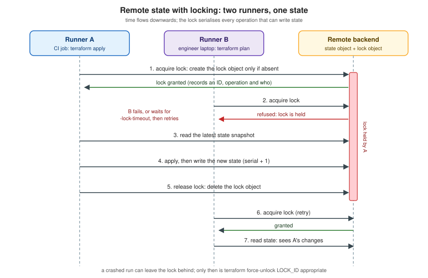

Backends and Remote State
|
This content was generated with the assistance of AI and should be verified against the official documentation before being relied on in production. |
The state file is the one artefact of a Terraform project that cannot be recreated from the code: it records which real objects belong to which resource block. The moment a second person, a pipeline or a second machine runs the same configuration, a state file on one laptop stops being enough. Two runs that read the same snapshot and write back different results lose work, and a laptop that is lost or wiped takes the mapping to production with it. A backend is the part of Terraform that answers these problems: it decides where the state snapshot is stored, whether it is locked while an operation runs, and (for two special backends) where the operation itself executes.
This page describes backends and remote state as documented for Terraform 1.17 and OpenTofu 1.13. It covers the backend
block and what it may contain, partial configuration, migrating between backends, locking, the catalogue of backends the
current documentation lists (and the ones that have been removed), how to secure state, the OpenTofu features that Terraform
does not have (state and plan encryption, early evaluation of variables in the backend block), the terraform_remote_state
data source and the alternatives to it, and a runnable LocalStack example. It follows
State in the reading path, because it assumes you know what state is and what it
contains, and it leads into
Workspaces, Environments and Project Structure
and CI/CD and Automation, where backends are used from pipelines. The
terraform command surface used here (init, state, force-unlock) is described in
CLI Essentials.
The examples use the Bookshelf scenario (catalog-api, reviews-api, web, PostgreSQL, Redis, a covers bucket).
Bucket names, account IDs, tokens and hostnames are placeholders. The AWS, Azure and Google Cloud snippets are illustrative
and are not run here; only the LocalStack example is meant to be run locally.
What a backend does
A backend has three responsibilities, and every backend implements the first, most implement the second and only two implement the third.
-
State storage. The backend reads the latest snapshot at the start of an operation and writes a new one when the operation changes state. With the default
localbackend the snapshot is a JSON file on disk. With a remote backend the snapshot lives in an object store, a database, a Kubernetes secret, an HTTP service or HCP Terraform. When a non-local backend is in use Terraform does not keep the state on local disk, except after a failed write to the backend, when it writes a local copy so that no data is lost and you must push it back manually once the problem is fixed. -
State locking. If the backend supports it, Terraform takes a lock before any operation that could write state and releases it afterwards, so two runs cannot interleave. Locking is automatic and silent. If it fails, Terraform does not continue. The documentation notes that you can turn locking off for most commands with
-lock=false, and recommends against it. -
Operations (only
remoteand thecloudblock). These two backends can runplanandapplyremotely in HCP Terraform or Terraform Enterprise and stream the log back to the terminal. Every other backend runs the operation on the machine where you typed the command and uses the backend only for the state snapshot.
Everything else behaves as if the state were local: terraform state list, terraform console, terraform output and the
other commands read the remote snapshot through the backend, and terraform state pull prints it to standard output.

The figure above shows the sequence that locking enforces. Runner A obtains the lock, reads the snapshot, applies and writes
a new snapshot with a higher serial, and releases the lock. Runner B, which asked for the lock while A held it, is refused;
depending on -lock-timeout it either fails immediately or keeps retrying. After the release it acquires the lock and reads
a snapshot that already contains A’s changes. The mechanics of the lock differ per backend (an S3 object, a Postgres
advisory lock, a Kubernetes Lease, a DynamoDB item, an HTTP LOCK request), but the contract is the same.
The backend block
A backend is configured with a nested backend block inside the top-level terraform block. The block label is the backend
type, and the arguments in the body are specific to that type.
terraform {
required_version = ">= 1.10"
backend "s3" {
bucket = "bookshelf-tfstate-example"
key = "catalog/prod/terraform.tfstate"
region = "eu-west-1"
encrypt = true
use_lockfile = true
}
}The documented rules and limits are:
-
One backend per configuration. A configuration can contain only one
backendblock. -
Default. Without a backend block Terraform uses the
localbackend, which writesterraform.tfstatenext to the root module. -
backendandcloudare mutually exclusive. A configuration that has acloudblock (HCP Terraform or Terraform Enterprise) cannot also have abackendblock, and neither of them is allowed to refer to named values. -
No references to named values in Terraform. A Terraform
backendblock cannot refer to input variables, locals or data source attributes, and values declared inside a backend block cannot be referenced elsewhere in the configuration. OpenTofu relaxes this; see OpenTofu: early evaluation, variables and locals in the backend block. -
Backends are built in. You select a type from the set shipped with the binary; you cannot load a backend as a plugin. The selected type must exist in the version of Terraform you run.
-
Credentials do not belong in the block. The documentation recommends leaving credential arguments unset and supplying them through the conventional files and environment variables of the target system (
AWS_*,ARM_*,GOOGLE_BACKEND_CREDENTIALS,PGUSER,CONSUL_HTTP_TOKENand so on).
Terraform writes the backend configuration, in plain text, into .terraform/terraform.tfstate (not to be confused with the
real terraform.tfstate), and every saved plan file captures that backend configuration. Two consequences follow. Values
passed with -backend-config or hardcoded in the block end up on disk and inside plan files, so never pass secrets that
way. And when you apply a saved plan, Terraform uses the backend configuration stored in the plan rather than the current
one, so time-limited credentials captured at plan time may have expired at apply time; use environment variables for
credentials to avoid this. The .terraform/ directory must be ignored by version control.
Since Terraform 1.15, terraform validate also checks the backend block: that the type exists, that required attributes
are present and that the backend’s own validation passes. The 1.15.1 patch release then removed the validation of the
attributes inside the block, because it was incompatible with workflows that supply them with -backend-config. In short:
validate confirms the backend type is known, but a partial configuration is not rejected for missing values.
Partial configuration
You do not have to put every argument in the block. A partial configuration leaves values out (typically credentials, the
bucket name or the key, because they differ per environment or per pipeline) and supplies them when you run terraform init.
At minimum the block must exist and name the type:
terraform {
backend "s3" {}
}The remaining arguments come from one or more of the following sources, merged in this order: the values in the
configuration first, then each -backend-config option in the order it appears, with later values overriding earlier ones.
| Source | How | Notes |
|---|---|---|
A file |
|
The file contains the block’s arguments as top-level attributes, with no |
Key/value pairs |
|
Repeat the option for each pair. Shells keep command lines in their history, so this is not for secrets. |
Interactive input |
Terraform asks for each missing required value |
Not for optional values, and not when input is disabled ( |
Environment variables |
|
Each backend page lists the variables it reads. This is the recommended route for credentials, because the values are not
written to |
A complete example for the Bookshelf: one configuration, one .tfbackend file per environment, no secrets anywhere.
# backend.tf
terraform {
required_version = ">= 1.10"
backend "s3" {}
}# envs/prod.s3.tfbackend
bucket = "bookshelf-tfstate-example"
key = "catalog/prod/terraform.tfstate"
region = "eu-west-1"
encrypt = true
use_lockfile = true# envs/dev.s3.tfbackend
bucket = "bookshelf-tfstate-example"
key = "catalog/dev/terraform.tfstate"
region = "eu-west-1"
encrypt = true
use_lockfile = true# credentials come from the environment or an OIDC-assumed role, never from the files
export AWS_PROFILE=bookshelf-ci
terraform init -backend-config=envs/prod.s3.tfbackendThe final merged configuration is stored in .terraform/, in plain text, which is why the directory is never committed.
Switching from dev to prod in the same working directory means running init again with the other file, and because
the backend settings changed, Terraform will want either -reconfigure or -migrate-state; the next section explains which.
For several environments the usual alternatives are a directory per environment or workspaces, compared in
Workspaces, Environments and Project Structure.
TF_CLI_ARGS_init can inject the same options from the environment, which is convenient in CI:
TF_CLI_ARGS_init set to -backend-config=envs/prod.s3.tfbackend. Because TF_CLI_ARGS and TF_CLI_ARGS_name simply add
arguments to the command line, anything on that line is subject to the same history and logging caveats.
Changing and migrating a backend
You can change a backend’s arguments, change the backend type (for example from local to s3, or from consul to
gcs), or remove the block altogether, at any time. Terraform detects the difference between the configuration and what
.terraform/ records, and refuses to run plans, applies or state commands until you re-run init.
init option |
Effect |
|---|---|
|
Copies the existing state to the new backend. Depending on what changed it may ask for confirmation, including whether to copy every workspace when several exist. |
|
Answers "yes" to the migration questions (and enables |
|
Ignores the previous backend configuration and initialises the new one as it is. No state is migrated. Use it when only the connection details changed (a new endpoint, a rotated role) and the data is already where you want it. |
|
Skips backend initialisation altogether. Other |
|
Partial configuration, described above. |
|
Control locking during the state operations that |
Since Terraform requires one of -reconfigure or -migrate-state once the backend has been initialised, the choice is a
real decision: -migrate-state moves data, -reconfigure does not. The documentation strongly recommends backing up the
state before migrating, by copying terraform.tfstate (or the output of terraform state pull) somewhere safe.
Migrating the Bookshelf from local to S3
# 1. work from a clean tree and back up the current state
cp terraform.tfstate "../bookshelf-state-backup-$(date +%Y%m%d).tfstate"
# 2. add the backend block (shown above), then re-run init
terraform init -migrate-state -backend-config=envs/prod.s3.tfbackendInitializing the backend...
Do you want to copy existing state to the new backend?
Pre-existing state was found while migrating the previous "local" backend to the
newly configured "s3" backend. ...
Enter a value: yes
Successfully configured the backend "s3"! Terraform will automatically
use this backend unless the backend configuration changes.The console text above is abbreviated and illustrative; the wording varies between versions. After the migration confirm
with terraform state list, run a terraform plan that must show no changes, and only then delete the local
terraform.tfstate and its backups. The reverse move is the same operation: remove the backend block and re-run init,
and Terraform offers to migrate the state back to the local backend.
The cases worth knowing:
-
Changing only the key or bucket (a rename). Use
-migrate-state; Terraform copies from the old location to the new one and leaves the old object in place, so remove it yourself once you are sure. -
Changing credentials or the endpoint only.
-reconfigure. -
Several workspaces. Terraform offers to copy all of them. For the
s3backend non-default workspaces live at<workspace_key_prefix>/<workspace_name>/<key>, withenv:as the default prefix. -
gcswith customer-supplied encryption keys. Terraform cannot migrate away from or between such keys by itself, because Google does not store them; you must rewrite the object with the old key first. Customer-managed (Cloud KMS) keys can be changed by a normal migration, and the change takes effect on the first write after it. -
state pullandstate pushare not a migration tool. The documentation callsstate push"extremely dangerous"; it overwrites remote state, and Terraform only protects you against a different lineage or a lower serial (both can be bypassed with-force). Changing the backend block and runninginit -migrate-statedoes the same job safely.
State locking
A backend that supports locking takes the lock automatically before any operation that could write state (plan with
refresh, apply, destroy, import, the state subcommands that modify state, workspace new and so on). If acquiring the
lock takes longer than expected Terraform prints a status message. A failed acquisition stops the command and the error
message names the lock ID and the holder’s recorded information.
-
-lock=falsedisables locking for the command. The documentation advises against it, because concurrent writers can corrupt state. -
-lock-timeout=DURATION(for example-lock-timeout=5m) makes Terraform retry for that long before giving up. A pipeline that serialises runs poorly benefits from a few minutes of timeout. -
terraform force-unlock LOCK_IDremoves a lock that was left behind (a crashed runner, a killed process, a lost network connection). The ID is the nonce printed in the error, which stops you from unlocking a different lock by mistake. The documentation says to use it only for your own lock after automatic unlocking failed, because releasing a lock that someone else holds produces two writers.force-unlockdoes not change infrastructure.-forceskips the confirmation prompt. -
Some backends need no
force-unlock: thepgbackend uses Postgres advisory locks, which are released automatically when the session ends, soforce-unlockis not supported there.
The backend catalogue
The 1.17 documentation lists these backends (the page for each is under
developer.hashicorp.com/terraform/language/backend/<name>), plus the cloud block that is not a backend type but plays the
same role:
| Type | Where state is stored | Locking | Notes |
|---|---|---|---|
|
A file on the local filesystem (default |
Yes, with system file-lock APIs. |
Default backend. Arguments: |
|
An object in an Amazon S3 bucket (or an S3-compatible service, best effort). |
Opt-in: |
The most widely used remote backend. See The S3 backend in detail. |
|
A blob in an Azure Storage container. |
Yes, with native Azure Blob Storage capabilities. |
Microsoft Entra ID authentication is recommended, with OIDC / workload identity federation preferred. |
|
An object below a prefix in a Google Cloud Storage bucket. |
Yes. |
Arguments |
|
A row in a table of a PostgreSQL database (version 10 or newer). |
Yes, with advisory locks. |
One |
|
One or more Kubernetes secrets named |
Yes, with a Lease resource. |
Handy for clusters, but the state is then only as protected as the cluster’s secrets. |
|
A REST endpoint: |
Optional, with |
For a custom state service or a Git forge that offers a state API. |
|
The key/value store of HashiCorp Consul. |
Yes (can be disabled with |
Needs an access token ( |
|
A bucket in Oracle Cloud Infrastructure Object Storage. |
Yes, with a conditional-write lock object. |
Added in Terraform 1.12. Not in the OpenTofu documentation. |
|
Tencent Cloud Object Storage. |
Yes. |
Listed in the documentation; global acceleration support since 1.3. |
|
Alibaba Cloud Object Storage Service. |
Yes. |
Listed in the documentation. |
|
A workspace in HCP Terraform or Terraform Enterprise. |
Yes. |
Can also execute operations remotely. HashiCorp recommends the |
|
HCP Terraform or Terraform Enterprise workspaces. |
Yes. |
Not a |
Removed backends. Terraform 1.3 removed the backends artifactory, etcd, etcdv3, manta and swift (all deprecated
in 1.2.3), and the legacy name azure for the Azure backend, which is now azurerm. An old configuration that still
uses one of them must be migrated to a supported backend with the older Terraform version that still understands it, before
upgrading. The 1.17 documentation has no page for these types.
The backends that are not on the list are as important as the ones that are: there is no aws or dynamodb backend, no
backend for a Git repository and no way to add one with a plugin. If your platform is not covered, http is the extension
point.
Source: Terraform Docs — Backend block configuration overview, Terraform v1.3 CHANGELOG, Terraform v1.12 CHANGELOG
The local backend
terraform {
backend "local" {
path = "relative/path/to/terraform.tfstate"
}
}path defaults to terraform.tfstate relative to the root module. workspace_dir sets the directory of non-default
workspaces. Use local for learning, for throwaway experiments (the LocalStack example below starts with it) and for tests;
never for a project that anyone else touches.
The S3 backend in detail
The s3 backend stores the state at key inside bucket. The only required arguments are bucket, key and region
(region may come from AWS_REGION or AWS_DEFAULT_REGION). The documentation strongly recommends enabling bucket
versioning so that an accidental deletion or a bad write can be recovered.
Locking. Locking is opt-in. Set use_lockfile = true and Terraform creates a lock object next to the state object, named
<key>.tflock, using S3’s conditional writes, and deletes it when the operation ends. This native locking was added in
Terraform 1.10 and became generally available in 1.11. Locking with DynamoDB (dynamodb_table, with a table that has a string
partition key LockID, and dynamodb_endpoint) is deprecated in the 1.17 documentation and "will be removed in a future
minor version". The two mechanisms can be enabled together to ease migration, and then a lock must be obtained from both.
terraform {
required_version = ">= 1.11"
backend "s3" {
bucket = "bookshelf-tfstate-example"
key = "catalog/prod/terraform.tfstate"
region = "eu-west-1"
encrypt = true
kms_key_id = "arn:aws:kms:eu-west-1:111122223333:key/EXAMPLE-KEY-ID"
use_lockfile = true
}
}To migrate from DynamoDB to native locking, first add use_lockfile = true alongside the existing dynamodb_table, run
terraform init -reconfigure (changing the block requires it), let every pipeline and engineer upgrade, and when all
callers use the new configuration remove dynamodb_table and run init -reconfigure again. Removing dynamodb_table in one
step is faster but risky: a runner with an old copy of the configuration still locks in DynamoDB while an updated one locks
in S3, so two applies can overlap. OpenTofu documents the same procedure, and notes that a state digest left behind in
DynamoDB must be cleaned up manually if you return to DynamoDB locking.
Permissions. Without workspaces, the principal needs s3:ListBucket on the bucket (at least on the prefix that holds the
state), s3:GetObject and s3:PutObject on the state key and, with use_lockfile, s3:GetObject, s3:PutObject and
s3:DeleteObject on the .tflock key. With workspaces it also needs access to
<workspace_key_prefix>/*/<key> (and its .tflock). Terraform does not delete the state object, so s3:DeleteObject is not
needed on it. For the deprecated DynamoDB mode: dynamodb:DescribeTable, GetItem, PutItem and DeleteItem on the table.
Writing these as an exact policy for one state object is how you give the production pipeline access to the production state
only.
Other arguments you will meet:
| Argument | Purpose |
|---|---|
|
Server-side encryption of the state and lock objects: S3-managed keys, a KMS key (which needs |
|
Prefix for non-default workspace states. Default |
|
Assume a role (several can be chained), or use a web identity (OIDC) token. The right setting for CI. |
|
Credential sources. Keep keys out of the file. |
|
An object that overrides service endpoints: |
|
Path-style URLs ( |
|
Skip checks that need real AWS services. Needed for S3-compatible servers and LocalStack. |
|
Refuse to run against the wrong account. A cheap guard for production. |
|
Retry behaviour of the AWS client. |
Since Terraform 1.15 the backend also reads credentials created by aws login. The documentation states that support for
S3-compatible storage services is "best effort": HashiCorp tests only against Amazon S3.
The azurerm backend
terraform {
required_version = ">= 1.10"
backend "azurerm" {
use_oidc = true
use_azuread_auth = true
tenant_id = "00000000-0000-0000-0000-000000000000"
client_id = "00000000-0000-0000-0000-000000000000"
storage_account_name = "bookshelftfstate"
container_name = "tfstate"
key = "catalog/prod.terraform.tfstate"
}
}The backend locks and checks consistency with native Azure Blob Storage capabilities. The authentication methods it lists are
Microsoft Entra ID (recommended, with OpenID Connect / workload identity federation preferred over client secrets or
certificates), SAS token, access key and "access key lookup" (finding the key through the management plane); the last three
are marked not recommended for new workloads. With Entra ID the principal needs Storage Blob Data Contributor on the
container. The lookup_blob_endpoint setting is for the Azure DNS zone endpoints feature. The IDs above are the all-zero
placeholder form; keep real tenant and client IDs in .tfbackend files or environment variables (ARM_TENANT_ID,
ARM_CLIENT_ID, ARM_USE_OIDC, ARM_USE_AZUREAD). Terraform 1.11 aligned the backend’s authentication with the AzureRM
provider and added Azure Pipelines support through ado_pipeline_service_connection_id. See
Terraform on Azure for the storage account itself.
The gcs backend
The book-era mistake of writing key and region in a gcs block is an error: those are S3 arguments. The gcs backend uses
bucket and an optional prefix.
terraform {
required_version = ">= 1.10"
backend "gcs" {
bucket = "bookshelf-tfstate-example"
prefix = "terraform/catalog/prod"
}
}The bucket must already exist, and it should have object versioning enabled. Named workspace states are stored as
<prefix>/<name>.tfstate. Credentials come from Application Default Credentials (gcloud auth application-default login on a
workstation, the attached service account on Google Cloud, GOOGLE_APPLICATION_CREDENTIALS elsewhere) or from
GOOGLE_BACKEND_CREDENTIALS, GOOGLE_CREDENTIALS, impersonate_service_account and access_token. The principal needs the
Storage Object Admin role on the bucket. Encryption options are kms_encryption_key (Cloud KMS, customer-managed; do not
destroy the key, because state encrypted with a lost key is unrecoverable) and encryption_key (customer-supplied). IAM
changes on buckets are eventually consistent, so a freshly granted role can produce 403 errors for a few minutes. See
Terraform on Google Cloud.
The pg, kubernetes, http and consul backends
terraform {
backend "pg" {
# connection string without the password; set PGUSER and PGPASSWORD in the environment
conn_str = "postgres://db.example.internal/terraform_backend"
}
}The pg backend needs an existing database (createdb terraform_backend), then creates a schema (schema_name, default
terraform_remote_state) and a states table keyed by workspace name. skip_schema_creation, skip_table_creation and
skip_index_creation let a database administrator create the objects in advance with less privilege. The connection can be
configured entirely through PG_CONN_STR and the standard libpq variables. Locks are advisory locks, and force-unlock is
not supported. OpenTofu 1.10 changed the locking implementation of this backend and added table_name and index_name;
the OpenTofu release notes warn not to share one database between the 1.10 backend and the older one.
terraform {
backend "kubernetes" {
secret_suffix = "bookshelf-state"
namespace = "terraform-state"
config_path = "~/.kube/config"
}
}The kubernetes backend writes the state to a Secret named tfstate-<workspace>-<secret_suffix> (possibly several secrets
with an index when the state is large) and locks with a Lease in the namespace. Use in_cluster_config when Terraform itself
runs in a pod. Kubernetes secrets are base64-encoded rather than encrypted, so enable encryption at rest for the cluster and
restrict RBAC on that namespace. See the Kubernetes section for the cluster side.
terraform {
backend "http" {
address = "https://state.example.internal/projects/bookshelf/prod"
lock_address = "https://state.example.internal/projects/bookshelf/prod/lock"
unlock_address = "https://state.example.internal/projects/bookshelf/prod/lock"
}
}The http backend uses GET to read, POST (configurable with update_method) to update and DELETE to purge. When locking
is enabled the server must answer the LOCK and UNLOCK requests (methods configurable with lock_method and
unlock_method) with 200, or with 423 or 409 and the holder’s lock information when the lock is taken. Credentials
can be set with TF_HTTP_USERNAME and TF_HTTP_PASSWORD, and mutual TLS is supported through the client_*_pem arguments.
Terraform 1.15 fixed the http backend so that it returns the conflicting lock’s information rather than the lock that failed.
terraform {
backend "consul" {
address = "consul.example.internal"
scheme = "https"
path = "bookshelf/terraform_state"
}
}The consul backend stores the state in the Consul key/value store at path, locks by default (the lock needs a Consul
session and write access to <path>/.lock) and requires an access token supplied through CONSUL_HTTP_TOKEN. gzip = true
compresses the stored state. The documentation page for partial configuration uses this backend for its examples because it
has so few arguments.
The oci backend
terraform {
required_version = ">= 1.12"
backend "oci" {
bucket = "bookshelf-tfstate"
namespace = "example-namespace"
key = "catalog/prod/terraform.tfstate"
region = "eu-frankfurt-1"
workspace_key_prefix = "envs/"
}
}Terraform 1.12 added a backend for Oracle Cloud Infrastructure Object Storage. Only bucket and namespace are required in
the documented example; the authentication settings (auth, config_file_profile, tenancy_ocid, user_ocid,
fingerprint, private_key_path) should come from the environment or an OCI config profile. Locking creates a lock object
<key>.lock in the same bucket using the If-None-Match header. The documented default workspace_key_prefix is
tf-state-env. The principal needs the Object Storage permissions to inspect, read, create and delete objects in the
bucket. Enable bucket versioning, as for the other object-store backends.
remote and the cloud block
Two things in this area changed names over time and are easy to mix up. The remote backend arrived in Terraform 0.11.13
for what was then Terraform Cloud and Terraform Enterprise. The cloud block is a newer, separate construct in the
terraform block, recommended by HashiCorp over remote since Terraform 1.1.0. The product is now called HCP Terraform.
terraform {
required_version = ">= 1.10"
cloud {
organization = "example-org"
workspaces {
project = "bookshelf"
tags = { layer = "application" }
}
}
}Within cloud, organization names the organization, hostname is for Terraform Enterprise installations (default
app.terraform.io) and workspaces selects one workspace with name or several by tags, optionally scoped to a project;
name and tags cannot be combined. TF_CLOUD_ORGANIZATION, TF_CLOUD_HOSTNAME, TF_CLOUD_PROJECT and TF_WORKSPACE supply the
values from the environment when the block omits them, and the block takes precedence if both exist. The legacy remote
backend instead uses organization and a workspaces block with either name (one workspace) or prefix (several
workspaces named <prefix><name>), never both. Both options keep state in HCP Terraform, can run plans and applies remotely,
and make terraform.workspace mean different things for local and remote operations in the prefix mode, a documented source
of surprises. The details of the platform are in
HCP Terraform and Terraform Enterprise. Terraform Test (see
Testing) also gained an experimental backend block inside run blocks in 1.14; it is
available only in experimental builds, so it is not covered further here.
Securing state
State is a secret. It contains every attribute of every managed object that a provider returns, and for many resources that
includes passwords, private keys, connection strings and tokens, whether or not you marked anything sensitive. Marking an
output or variable sensitive hides it in the CLI output; it does not remove it from the state file. The remote backend adds
the benefit that no copy of the state stays on disk, so the controls that matter are the ones on the storage service.
| Control | What to do |
|---|---|
Access control |
Give the state its own bucket, container or database, separate from application data. Grant read and write only to the
pipeline identity of that environment, grant humans read access only if they need it, and use per-object policies when
environments share a bucket. Remember that |
Encryption at rest |
Enable it on the store: SSE-S3 or SSE-KMS ( |
Encryption in transit |
Use TLS endpoints only. Never set |
Versioning and backups |
Turn on object versioning (S3, GCS, OCI) or database backups, and set a lifecycle rule that limits how many versions of the small state and lock objects accumulate. Versioning is what turns "I overwrote the state" from a disaster into a rollback. |
Locking |
Always enable it ( |
Credentials |
Use short-lived credentials: OIDC from CI, instance or workload identity, |
Audit |
Enable bucket and key-management access logging (CloudTrail data events for S3, Azure Monitor, Cloud Audit Logs) so reads of the state are traceable. |
Local artefacts |
Ignore |
Blast radius |
One state per environment and per stack, not one for the whole company. A narrower state means a narrower credential and a shorter lock queue. |
Never archive terraform.tfstate as a CI build artefact; the pattern appears in older books and defeats every control above.
OpenTofu: state and plan encryption
OpenTofu 1.7 introduced client-side encryption of state and plan files, something Terraform does not have. It is configured
in an encryption block inside terraform, or in the TF_ENCRYPTION environment variable, or both (the environment
overrides the code). The data is encrypted before it leaves the machine, so the backend only ever stores ciphertext, and the
same mechanism covers the terraform_remote_state data source. The block has four moving parts:
-
A key provider produces the key:
pbkdf2(a passphrase of at least 16 characters, stretched with PBKDF2),aws_kms,gcp_kms,azure_vault,openbao(the OpenBao transit engine) orexternal(a program that speaks a documented protocol). -
A method uses the key:
aes_gcm(key length 16, 24 or 32 bytes),external, orunencrypted, which exists to migrate to or from encryption. -
The
stateandplanblocks bind a method to that kind of data. Each may have afallbackblock (tried when reading with the primary method fails; writes always use the primary method) andenforced = true, which makes OpenTofu refuse to write unencrypted data. -
A
remote_state_data_sourcesblock binds methods toterraform_remote_statedata sources, with adefaultand optional namedremote_state_data_sourceentries.
variable "passphrase" {
type = string
sensitive = true
}
terraform {
required_version = ">= 1.8"
encryption {
key_provider "pbkdf2" "bookshelf" {
passphrase = var.passphrase
}
method "aes_gcm" "bookshelf" {
keys = key_provider.pbkdf2.bookshelf
}
state {
method = method.aes_gcm.bookshelf
enforced = true
}
plan {
method = method.aes_gcm.bookshelf
enforced = true
}
}
}Supply the passphrase as TF_VAR_passphrase rather than a default value in the file. Rules and cautions from the
documentation:
-
Once data is encrypted it cannot be read without the key. Back up keys and the unencrypted state before enabling.
-
Do not rename key providers or methods after data is encrypted, because the ciphertext carries metadata with those names. Use a
fallbackblock for changes, or setencrypted_metadata_aliason the key provider to decouple the name. -
Enabling on an existing project needs the
unencryptedmethod as a temporary fallback, because OpenTofu refuses to read plain-text state once encryption is configured (a guard against tampered files). Addmethod "unencrypted" "migrate" {}, putfallback { method = method.unencrypted.migrate }in thestateblock, runtofu apply, then remove the fallback and considerenforced = true. Rolling back is the mirror image and must not touch the original method until it is finished. -
Encryption protects data at rest. It does not defend against data loss, replay of an older state or plan, or against the person who runs
tofu. -
With a key management system, the documentation recommends one key per state file, so that states stay isolated and each is separately governed.
-
The compatibility promise is that each key provider and method is supported for one more minor version after it is documented as deprecated, and a deprecated one produces a warning on
planandapply.
OpenTofu 1.10 added external key providers and chained PBKDF2, and 1.13 added additional_authenticated_data to gcp_kms,
encryption_context to aws_kms and associated_data to openbao. The -backend=false option of tofu init skips
reading the local encrypted state since 1.13.
OpenTofu: early evaluation, variables and locals in the backend block
Terraform’s backend block accepts only literal values, which is why the partial-configuration dance exists. OpenTofu 1.8
added early evaluation: the backend configuration, module source and version arguments, and the encryption block may
use input variables and locals, provided they can be resolved during tofu init, before any state is available. Values from
the state, data source attributes and provider-defined functions are not allowed. The documentation example:
locals {
region = "eu-west-1"
}
terraform {
backend "s3" {
region = local.region
}
}Practical rules: pass the variable values on the command line, in a .tfvars file or with TF_VAR_ variables when you run
tofu init; a variable used this way must have a value at init time (a variable that is not supplied would be prompted
for or fail); and the documentation warns against using this to carry secrets, because the values are written to
.terraform/ just like -backend-config values. OpenTofu 1.8 also added an option to mark such variables sensitive. A
configuration that relies on early evaluation does not run on Terraform, so a project that must work on both tools keeps
using -backend-config files. OpenTofu still supports -backend-config and .tfbackend files.
Terraform 1.17, which added variables and locals in provider requirements, still states that a backend block cannot refer to
named values, and Terraform 1.15 added variables and locals in module source and version (see
Modules), but not in backends.
Sharing data between configurations
A real system is several root modules: a network stack, a platform stack, the applications. The application stack needs the network’s subnet IDs. There are three families of ways to pass them.
The terraform_remote_state data source
terraform_remote_state reads the root module outputs of another configuration’s latest state snapshot from its backend.
It needs no provider configuration, because it comes from the built-in provider terraform.io/builtin/terraform.
# network stack (separate root module and state)
output "private_subnet_ids" {
value = aws_subnet.private[*].id
}# catalog-api stack
data "terraform_remote_state" "network" {
backend = "s3"
config = {
bucket = "bookshelf-tfstate-example"
key = "network/prod/terraform.tfstate"
region = "eu-west-1"
}
}
resource "aws_lb" "catalog" {
name = "catalog-api"
load_balancer_type = "application"
subnets = data.terraform_remote_state.network.outputs.private_subnet_ids
}Arguments: backend (required, the backend type), config (an object holding that backend’s arguments, in which nested blocks
become attributes, for example workspaces = { name = "networking-prod" }), workspace (optional, for backends with workspaces) and
defaults (values for outputs missing from an empty state). Attributes: outputs, an object holding every root output.
Outputs of nested modules are invisible unless the root module re-exports them with its own output block.
The documentation is explicit about the drawback. Although only outputs are exposed, the reader must have access to the
entire snapshot, which usually holds sensitive data, and anyone able to read the outputs can read the rest through direct
requests. It also couples the consumer to the producer’s backend type, bucket layout and state-file format. The
documentation therefore recommends publishing the data explicitly to a separate location where access can be controlled
independently, and recommends tfe_outputs for HCP Terraform.
Alternatives
| Approach | How | Notes |
|---|---|---|
Data sources of the same cloud |
The consumer looks the object up by name or tag: the |
No coupling to the producer’s state. Needs a naming or tagging convention. Often the simplest answer. |
A configuration store |
The producer writes values with a resource and the consumers read them with the matching data source: Amazon SSM Parameter
Store ( |
Separate access control from state. Other systems (compute instances, schedulers) can read the same values. For
structured values use |
DNS |
Publish IP addresses and host names as records in a private zone ( |
Works for any consumer, not just Terraform. |
|
The HCP Terraform / Enterprise provider reads workspace outputs through the API. |
Takes |
Stack outputs |
In Terraform Stacks a component or deployment publishes an output and other stacks consume it as an upstream input. |
See Terraform Stacks. |
A data-only module |
Wrap whichever lookup you chose in a module, so consumers call |
Lets you change from remote state to a store later without editing every consumer. |
Source: Terraform Docs — Alternative ways to share data between configurations, Terraform Registry — tfe_outputs data source
A small example of the SSM pattern, with the producer and the consumer in separate configurations:
# producer (network stack)
resource "aws_ssm_parameter" "private_subnet_ids" {
name = "/bookshelf/prod/network/private_subnet_ids"
type = "String"
value = join(",", aws_subnet.private[*].id)
}# consumer (catalog-api stack)
data "aws_ssm_parameter" "private_subnet_ids" {
name = "/bookshelf/prod/network/private_subnet_ids"
}
locals {
private_subnet_ids = split(",", data.aws_ssm_parameter.private_subnet_ids.value)
}The value attribute of aws_ssm_parameter is always marked sensitive, which is why a plan shows it as hidden even though
subnet IDs are not secret. Either use nonsensitive() on a value you know is safe or use the insecure_value attribute,
which the provider documents as never sensitive and which therefore needs a deliberate choice. This page does not use
either, to keep the example conservative.
When you use terraform_remote_state with an encrypted OpenTofu state, remember the remote_state_data_sources block: the
consumer needs a method that can decrypt the producer’s state, and if key names in the two projects clash the
encrypted_metadata_alias option fixes the metadata key.
A LocalStack S3 backend example
LocalStack emulates AWS services on a local port, which makes it a safe way to practise the S3 backend without an AWS account.
The setup below runs the container, creates the bucket, and initialises a backend pointing at it. Nothing in it is a real
credential: LocalStack accepts any non-empty access key, and test is the conventional placeholder.
# start LocalStack on its default edge port 4566
docker run --rm -d --name localstack -p 4566:4566 localstack/localstack
# dummy credentials; LocalStack does not validate them
export AWS_ACCESS_KEY_ID=test
export AWS_SECRET_ACCESS_KEY=test
export AWS_DEFAULT_REGION=us-east-1
# create the state bucket and turn on versioning (needs the AWS CLI)
aws --endpoint-url http://localhost:4566 s3 mb s3://bookshelf-tfstate
aws --endpoint-url http://localhost:4566 s3api put-bucket-versioning \
--bucket bookshelf-tfstate --versioning-configuration Status=Enabled# main.tf
terraform {
required_version = ">= 1.11"
required_providers {
random = {
source = "hashicorp/random"
version = "~> 3.6"
}
}
backend "s3" {
bucket = "bookshelf-tfstate"
key = "localstack/terraform.tfstate"
region = "us-east-1"
# S3-compatible server on localhost
endpoints = {
s3 = "http://localhost:4566"
}
use_path_style = true
# this is not AWS: skip the checks that call real AWS services
skip_credentials_validation = true
skip_requesting_account_id = true
skip_metadata_api_check = true
skip_region_validation = true
skip_s3_checksum = true
# native S3 locking; see the caveat below
use_lockfile = true
}
}
resource "random_pet" "demo" {}
output "demo" {
value = random_pet.demo.id
}terraform init
terraform apply -auto-approve
aws --endpoint-url http://localhost:4566 s3 ls s3://bookshelf-tfstate/localstack/What each line is for:
-
endpoints = { s3 = "http://localhost:4566" }points the S3 client at LocalStack. The older top-levelendpointargument is deprecated, and theAWS_ENDPOINT_URL_S3environment variable is an equivalent that keeps the file portable. Becauseskip_credentials_validationandskip_requesting_account_idare set, no STS or IAM endpoint is needed. -
use_path_style = trueselectshttp://localhost:4566/bucketinstead ofhttp://bucket.localhost:4566. The deprecated name isforce_path_style; the LocalStack documentation uses the host names3.localhost.localstack.cloudfor virtual-hosted style, and falls back to path style when that name cannot be resolved. -
The
skip_*flags stop the backend from calling STS, the EC2 metadata service and IAM, none of which a minimal LocalStack setup needs.skip_s3_checksumhelps S3-compatible APIs that do not support the checksum headers. -
Credentials: the standard
AWS_ACCESS_KEY_IDandAWS_SECRET_ACCESS_KEYvariables carry the dummy values, so the file contains no secrets. Never reuse this file for a real bucket without removing theendpoints,use_path_styleandskip_*lines, because those lines disable safety checks. -
use_lockfile = trueasks for native locking through S3 conditional writes. HashiCorp tests only against Amazon S3 and LocalStack’s documentation does not state whether it supports conditional writes, so test locking yourself: run twoterraform applycommands in parallel and confirm that the second fails. If your LocalStack version does not enforce it, removeuse_lockfilefor the local exercise, and keep it in the real configuration.
To see the same example move from local to LocalStack and back, start with no backend block, run terraform apply, add the
block and run terraform init -migrate-state, then check that the state object appears in the bucket. Stop the emulator with
docker stop localstack; its state is gone with it unless you enable LocalStack persistence.
What changed recently
| Version | Change |
|---|---|
Terraform 1.3 |
Removed the backends |
Terraform 1.10 |
The |
Terraform 1.11 |
S3 native locking is generally available and the DynamoDB arguments are deprecated. The |
Terraform 1.12 |
New |
Terraform 1.15 |
|
Terraform 1.17 |
No change to the backend catalogue; the documented rule that a |
OpenTofu 1.7 |
State encryption (AES-GCM; PBKDF2, AWS KMS, GCP KMS and OpenBao key providers). |
OpenTofu 1.8 |
Variables and locals in backend configuration and in module |
OpenTofu 1.10 |
S3 native locking with |
OpenTofu 1.12 and 1.13 |
|
Terraform and OpenTofu differences
| Topic | Terraform 1.17 | OpenTofu 1.13 |
|---|---|---|
Variables and locals in |
Not allowed. |
Allowed if resolvable at |
State and plan encryption |
None. Rely on the storage service. |
Built in, with |
S3 DynamoDB locking |
Deprecated since 1.11 and to be removed in a future minor version. |
Fully supported; the documentation says there are no plans to deprecate it. Native |
|
Present since 1.12. |
Not in the documentation. |
|
The |
The documentation has a |
Command name and files |
|
|
|
Original locking implementation. |
1.10 changed it and added |
State files written by the two tools are compatible while the Terraform versions in question are compatible. Once a state is encrypted by OpenTofu, Terraform cannot read it. See OpenTofu for migration and version mapping.
Where the books are outdated or wrong
-
DynamoDB table for S3 locking (Hafner). Since Terraform 1.10 and 1.11 use
use_lockfile = true; the DynamoDB arguments are deprecated and may run in parallel during migration. OpenTofu still supports DynamoDB without deprecation. -
A
gcsbackend withkeyandregion(Wang, an error). Thegcsbackend usesbucketandprefix;keyandregionare S3 arguments. -
state pullandstate pushto migrate to a remote backend (Wang). Change thebackendblock and runterraform init -migrate-state. The documentation labelsstate pushextremely dangerous. -
A Jenkins job that archives
terraform.tfstateas a build artefact (Wang). Never: state holds secrets. Use a remote backend with encryption and locking. -
-stateand-state-out. Deprecated since 1.10; use thelocalbackend’spath. -
"Terraform Cloud" and the
remotebackend as the way to HCP Terraform (both books). The product is HCP Terraform and the recommended integration is thecloudblock. -
Backends that no longer exist (
etcd,etcdv3,swift,manta,artifactory,azure). Removed in Terraform 1.3.
Pitfalls
-
Bootstrapping. The bucket that holds the state cannot be created by the configuration that stores state in it on the first run. Create it with a small bootstrap configuration that uses the
localbackend, or with the cloud CLI, then migrate the bootstrap’s own state into it. Protect the bucket withprevent_destroy(see Lifecycle, Validation and Checks). -
Editing the backend block without re-running
init. Terraform stops with a message to re-initialise; choose-migrate-stateor-reconfigureon purpose. -
Secrets in
-backend-config, in the block or inTF_VAR_inputs used early. They are written to.terraform/and plan files. -
-lock=falsein a pipeline to get around a stuck lock. Find the real holder, and useforce-unlockonly for a dead run. -
Two environments sharing one state key. Give each environment its own key or prefix. Workspaces share the backend configuration and differ only by the key path, so permission boundaries should not rely on them.
-
Turning off versioning to save money. It is the cheapest insurance, bounded by a lifecycle rule.
-
Reading everything with
terraform_remote_state. Share only what is needed, and prefer a separate store with its own permissions.